来源：https://lqhefhcsx54.feishu.cn/docx/BQ4LdvuwmoV66AxvEmSc4vGJn3g
大家好，我是2024年6月视频号带货长航海47天的志愿者薄荷Heidi。
这不9月份航海准备开始了嘛，摆脱拖延症，赶紧写了翻车复盘的帖子给大家，避免再次翻车。
抱着我要边学边帮助船友的心态，我兴致勃勃的冲在前面，开始几天想着小组竟然可以第一，到时我一定向其他优秀的志愿者一样写优秀复盘经验贴，结果啪啪打脸！
1、小组由航程里程数第一名跌到第五名，
2、47天满勤只有2个免押金的船友，28个免押金的小伙伴上岸只有11个，一半都没有~~
3、除去免押金的小伙伴，1个交了押金的船友上岸失败，999元打水漂了，小组的上岸率是0%，是0%，忧伤~~
先说说为什么我会当志愿者，非常简单。
把上一次思维导图的志愿者柏芝帮助我鼓励我认可我的志愿者精神传承下去。
最后我的打卡日志变成→志愿者感恩日记和视频号带货复盘记录。
是她，把我这个i人拎起来，从不主动求助，到主动分享。
是她，每条打卡日志都点赞，偶尔还评论鼓励，感觉被看到。
是她，带领队伍7天就冲上榜一，我愿意追随她一起冲，这是小组的荣誉。
是她，鼓励我分享，最后还赠送了一本郭拽拽的《前途无量》，无比感恩。
所以我必须带着她这种精神，继续帮助30个船友，成功上岸，并有所收获。
结果，一切都手忙脚乱，不如预期。
按照赫连雨彤领队的转发的志愿者手册，认真读起来，参考优秀志愿者复盘准备起来，
等着上船，等着起航，等着打卡，等着爆单，等着解决各类问题。
做志愿者的经验除了来自柏芝，还有志愿者手册和优秀志愿者的复盘。
我把生财上面所有关于志愿者的帖子全部看了好几遍并进行梳理总结，里面的内容基本分成两派：
一派是做好志愿者的本分，不过分的讨好卑微；
一派是纯分享服务技巧，是提效工作。
因为是i人，我很自然的选择了后者。
而后来就变成「卑微的小怨妇」，
情绪波动就变成：兴奋→惆怅→卑微→抱怨→抓狂→摆烂。
长话短说，说一下我都掉进哪些沟里吧。
顶着我要做一个相对很好的志愿者的心态，航海还没开始，我就在添加船友时就哐当哐当地在飞书建了几个表格
1、自己志愿者每天要干的事
2、船友的打卡情况
3、是否打卡表格
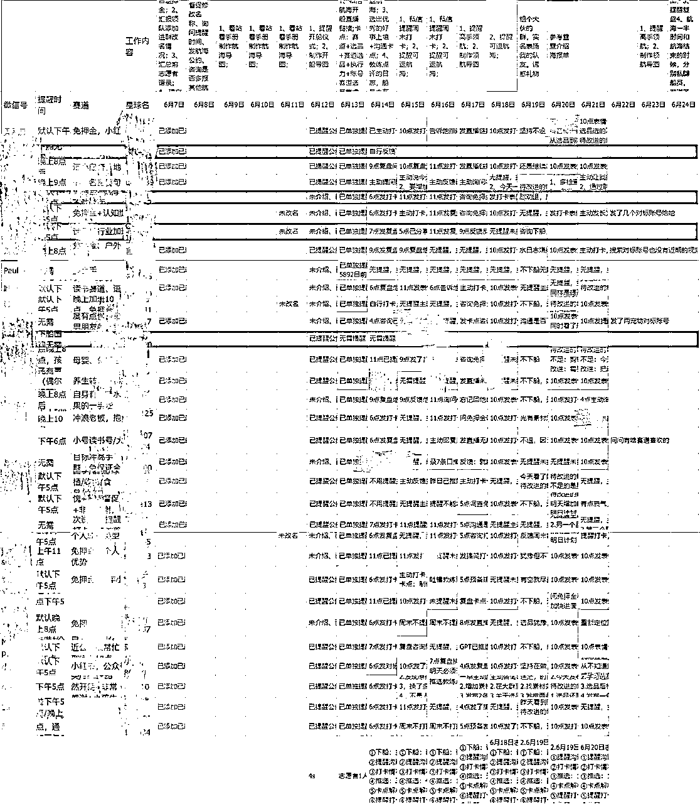
尤其是上图船友的基本状况，细致到爆炸。
当然不是为了调查谁，只是记性不好，
基本在日常聊天或者星球或者群里自我介绍了解到的讯息，
多半是新人，朋友圈和星球都很【干净】，
所以要在朋友圈里提取关于他们的关键词，
这时对我我来说，想【投其所好】就想很难了。
何况大部分人基本已读不回，
所以不根本不知道对方感兴趣的话题。
难得通过蛛丝马迹发现点东西，
纯粹记下，能帮他们解决问题，又不过分打扰。
我就试过把船友搞混了，幸好没被发现，不然就尴尬。
记录的点有：
1.他们在群里有没有自我介绍，
2.他们在群里修不修改航海昵称和参加次数，
3.他们需要我几点提醒，
3.他们今天打卡内容是什么，
4.他们被我几点提醒了打卡后的接下来的动态，
5.他们谁无需提醒主动打卡，
6.他们谁的打卡时间好事上墙，
7.他们谁动摇了想下船，
8.他们今天跟我聊了什么内容，感知到他的状态，卡点在哪，我给他们支的招是什么，给予了星球链接、整理好的导图、看到适合他赛道的推荐账号等等，
9.明天要怎么帮他们，要提醒什么，要问他们什么，
10.是否在星球每天每条打卡内容都点赞评论鼓励等等。
对了，分享一波打卡日志夸夸文案，亲测有用。
问题是在航海进行到1/3的时候我就停下更新了，剩下的只有手机监督，表格完全废了。
过于完美，导致每一步都想完美的呈现记录，到后面坚持不下去。
所以后面催打卡已经催不动。
志愿者群里共享「搞笑催打卡表情包」和「引人想点进去的故事实则打卡链接」都不够用了。
连借着
「你今天发了9条视频真棒！」
「今天直播~~」
「好事上墙啦~」
「我来分享私藏干货啦~~」
「看着你变现感觉我也变现了~」
「今天被教练点评啦~」
「咱组开始掉出第三名~」
「你感情好细腻哦~」
「你能坚持已经打败80%的圈友了！」
「又被你鼓励到了~」
「感谢你的能量回流~」
这些无论是夸夸鼓励、利他、被Cue、给点压力的招数都毫无波澜。
该主动打卡的依然主动打卡，所以我最后心态已经放到最平了。
改进
打卡跟进
1、表格简单易记录即可，以免增加更新压力。
2、整理多个除表情包打卡链接外的花式有效催打卡技巧。
有更多好办法的志愿者可以评论区支招哈~~
47天的航海周期很长，考虑过程中船友会有对应的收获或者需要改进的总结，
那为何不做个复盘调查问卷呢？
既可以帮到船友思考自己的方向、进度进行修正，
又可以直接复制调查内容作为打卡日志的内容，降低打卡难度，
我又可以看到他们的一些真实的想法，因为有些船友可是i人，基本不回复消息，我是可以理解的，那已读不回，可以在问卷写写总结吧。
他们的真实想法更好的让我找到他们的卡点。
简直是一举多得，我还夸自己真是个小聪明。
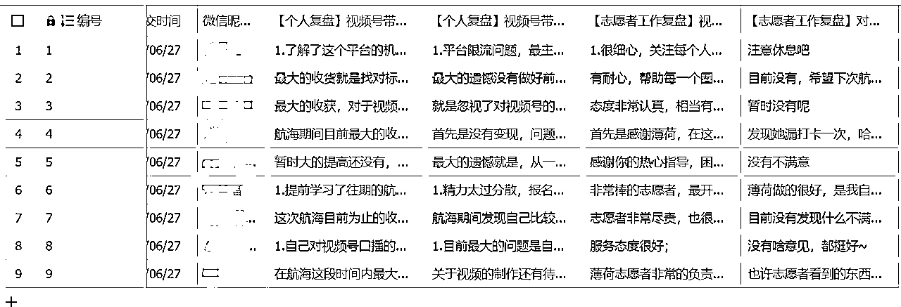
重点来了，我并没有第一时间重视他们的复盘。
1.看到没有很多人做复盘，首先是心情有点低落，情绪上没有调整过来。
2.看到已经填写的大部分船友多是表扬自己细致细心耐心尽责，已经沾沾自喜了。
3.粗看复盘感觉都是对船友自身自责的多，因此没太在意，毕竟是他们对自己的评价，我也不好点评他们。
4.他们已经自责了一遍，那我再Cue他们的痛点多不好啊，感觉「哪壶不开提哪壶」似得，那夺笋呐~~
实际船友提到的隐形问题我却忽略了。
改进
1.前期：迷茫
【没有做好前期准备工作，航海开始后觉得时间紧迫】
船友提到的时间紧迫听着和47天足够时间好像有矛盾点，实际是出现限流、违规、二次创作、对标等时间花费的时间长，导致想要的正反馈姗姗来迟。
除了航海宣传时要求准备的2个视频号、剪辑工具、选品工具、飞书素材库等，除了简单的告知可以提前看往期的航海手册外，实际不是我有这个工具就行，而工具怎么为己所用。但是大部分人都只是知道有往期的航海手册可以看，实际并未打开链接学习。
作为志愿者，想要船友快速进入航行准备过程，还需要多做准备功夫。
（1）搜集优秀分享
多搜集关于航海主题的相关精华帖、中标风向标、圈友整理过的竖版思维导图或者直接上手的实操视频，或许这样能快速进入航海状态。
（2）咨询准备条件是否满足
拉群期间可以问问是否有想做的赛道、对标的账号，粉丝有多少，是否够条件开直播，而不是当他们出现卡点时才问你做啥赛道。
（3）咨询风险预案是否备足
可以问问是否手上已经有多个账号待命、多个橱窗号开通，而不是当他们被限流时干等账号或橱窗解封。
减少挫败，心情缓解得了，A账号不行立马切换B账号的有效方案在手，后续打卡就容易跟上。
2.中期：精力不足执行力差
【精力太过分散，报名了两个航海，新手刚开始做视频号关注的东西很多，没有办法聚焦，比如账号、选品、找素材、实拍、口播、剪辑、直播等，需要关注的太多，结果一样都没做好】、【执行力的问题，还有就是不能完全沉下心来对这个项目进行必要的梳理】
虽然生财官方限制多报名，但是毕竟视频号带货是长航海，如果与其他航海并行，花费的时间依然会很多。
看完船友的这个问题，初期我只认为是时间不够，加上他的家庭原因，导致开展不顺利，并没有多想。
实际这个问题还是可以挽救一下。
关于多航海并行，在3月份的时候，我是一口气报名7个航海的热血青年，我的目标只有一个，熟悉项目并上岸。
当然我并不鼓励大家多航海并行，但是每个航海你需要达到怎样的成果，还需要自己去定好，别人帮不了你。
7个航海的志愿者也基本没怎么提醒我，是我自己找到目标并完成。
所以当一个迷茫不知从何下手的新人参加多航海时，志愿者引导建立他自己的上岸目标就显得很重要了。
（1）协助规划时间
譬如问问“大概什么时候腾出来学习”，陪着他，让他有意识的开始分配的时间，开始留时间学习，开始有计划规划今天的学习内容，也方便志愿者去监督。
而不是被他的一句话“我今天很忙，不打卡了”怼到哑口无言，只能放弃。
（2）顺带减压
再者就是看看船友的另外一只船是什么，看能不能帮上忙，也顺带减轻他的航海压力。
虽然有点把对面志愿者的活也干了，但是这确实是个很暖心的行为，将心比心，我也很爱这个志愿者。
（3）自制船友的成果认可海报
前期有个同船的志愿者给我支招，但是我当时没在意，估计这也是她能在尾巴冲到前二的原因之一。
及时给船友做成果认可的海报，船友会感受到被认可，动力会更足。
善于发现他们的亮点，简单的给他们【贴标签】
日更8篇--执行爆棚者
解除限流--拆弹小能手
混剪2条视频--混剪装甲师
当然还有作业完成率永远 100%、1个月涨粉200变现2000、连续xx天好事上墙、倒卖信息差的杭州哥、心思细腻温婉女生等等。
即使是自制的可能粗糙，但是被惦记的感觉谁都爱。
鉴于时间问题，我当时放弃了，有机会我会在下一次航海上执行。
（4）劝退
当然还可以在前期就劝退船友下船，以免精力分散，虽然我劝过，但是效果不明显，大家有好招也可以分享给我。
3.后期：无成绩无变现
【没有变现，问题可能是视频量不够】、【没有成绩的时候有点像假装努力的学生】
船友提到没有变现，认为可能是视频量不够，实际不止数量不够，还有例如黄金3秒不到位、视频质量不够好、评论区没有进行有效引导等很多原因。
实际部分船友每天剪辑的视频有8~10条，数量相对日更2条的船友已经很棒了，但是花费时间长，期待就会更高，所以在后期看不到一点正反馈就容易放弃。
而我在关心他们发了8条视频打了今天的卡，没有往变现方向去鼓励优化。
（1）主动暴露问题
作为志愿者，应该鼓励他们阶段性地主动暴露自己的问题或者账号，给到教练点评，收获改进方向，而不是继续藏着掖着或者只是默默的盲目坚持，像个很忙很努力的学生。
（2）好事墙分享
每天好事上墙我基本没逛过，前期发现看到别人变现就焦虑，实际需要看的不只是变现金额，而是变现那天小伙伴做了什么，都修正了什么行为，都输出了什么，学习的是他变现的背后原因，可能一天看不出来，可以多蹲几天。
鉴于我自己都没看好事墙，自然而然我也没分享别人的好事，虽然航海中后期才开始分享，但是已经很晚了，效果大打折扣。
所以后续可以在前期就开始分享好事，可以根据赛道、船友类似经历、限流、剪辑等各类模块，多维度的整理并分享，对于船友来说，会更有针对性地解决当前问题，降低实操难度；对于志愿者来说，可以更立体的看到不同情况下的优秀船友，并且锻炼自己的网感，也为识别风向标打基础。
虽然我的记录表格过于复杂，但是熟悉每个船友的情况真的很有必要。
要不然无从下手跟进他们的卡点。
（3）定制船友所好的催卡表情包
关于后期船员疲累倦怠的问题，可以给船员定制催卡表情包。
通过他打卡日志或者日常聊天中知道船友喜欢的某类东西，而【投其所好】。爱猫就定制猫咪表情包，爱绿植就定制发财树，爱演唱会就发流行明星表情包。
（4）共创分享链接
有船友变现，可以组织分享复盘，及时邀请组内优秀有潜力的船友进群，让变现过的船友带动小组气氛，让组内内容更有价值，更能帮组员破圈，变现的船友可以是组内的成员，也可以是其他组的成员，让更多的人相互链接。
以上三大类都是大部分船友慢慢掉队，没坚持打卡，慢慢掉队的问题，也是我们志愿者普遍面临的问题。
真的值得志愿者去思考。
开始想着船友多数是第一次参加航海，也是已读不回的状态，难得我咨询是否有卡点困难点的时候就开口，
那我不得抓紧机会跟他炫聊，硬是把我这i人变成e人。
所以我打开话匣子的方式是→帮他在群里或私聊问教练！
然而，实际一次两次还好，教练鼓励最好的那是自己表达发现问题的过程，并解决。
所以后面私聊发现，原来有了志愿者在前面冲锋陷阵，
他们会暂时的觉得很安全，但是若志愿者没有继续主动带头冲锋，
不好意思打扰志愿者，不好意思打扰教练，最后变成更加不愿意暴露自己的问题。
那多次问题的堆积，多个问题的积累，多个卡点未被解决，最终导致放弃航海。
对于船友来说，自己的问题自己描述会更加清晰，得到教练的回复或肯定，会更加的有底气！
对于志愿者来说，志愿者在中间转述会有时间差，会有理解上的误差。
改进
1.志愿者可以更多的整理群里类似问题的答疑进行分享、指引。
2.虽没说不能代问，但是学会鼓励船友主动暴露问题也是一个新技能，也是我需要学习的一种鼓励能力。
同时也可以避免“为啥你帮他问不帮我问”的尴尬问题。
前期在咨询船友大概什么阶段进行监督打卡的时候，会收集到他们的情况。
有早晚各两次，有晚上9~10点，有下午5、6点，有无需提醒。
为了防止打扰别人，前期我是严格他们要求的时间进行提醒。
后期发现不对劲，尤其晚上那批人，太晚提醒，打卡时间不够，索性不打卡。
后来私聊发现，原来是我提醒才开始学习，导致没有实操，或者实操后还没拿到视频号播放数据，就不想打卡。
所以到了后期我就提前到下午6、7点提醒打卡。不再担心打扰别人的问题。
但是也是挽救不了，因为前期落下的打卡次数太多，不愿半路捡起来。
尤其标注「无需提醒」的船友，我简直非常相信的真的不再提醒了。
当看到她连续7天、半个月、1个月不打卡的时候，已经无法挽回。
改进
(1)提前预警
后续连续2天不打卡，就需要预警，跟踪他的情况，
(2)提前摸底
是围观还是放弃还是迷茫还是没时间，起码心里有个底，而不是任由恶性发展下去。
当然也有可能是因为免押金的原因，无压力吧。
一样有免押金的船友47天满勤变现，所以自己想不想突破舒适圈真的很重要。
(3)真诚是永远的必杀技
不管你信不信，想要看清一个人其实很简单，你只管真诚地对他，
你越真诚，你看他是肆无忌惮地消耗你，还是他想要满足你，
看一个人的人品行不行，就让他拥有伤害你的权利，
如果他真心换真心，咱绝对不能让人家输，
如果他不知深浅，咱也无需多言，该走走，该留留，
没有什么舍不得，只有值不值得。
志愿者做的只能是稍微提醒稍微陪伴稍微引导，希望大家不要学我这么卑微哈~~
由于航海第8天就飙升第一名，心理就痒痒的，坚持了大半个月后，陆续跌到第二名、第三名、第四名、第五名。
越跌越焦虑，越想赢回来，越想赢，动作就开始变化，
第一名的排名让我摩拳擦掌，感觉只要有人打卡就行，只要有人好事上墙就行，
实际在这个月内，我关注的由始至终都在偏离航线上，志愿者应该关注的是上岸率，而不是里程数。
原本只是想着让更多人上岸拿到成绩，实际偏离成让大家的打卡里程数成就拿到排名第一的我。
所以才会有上面那些劝说打卡的骚操作，最终小组仅有一个交了押金的船友拉不回来，而免押金的上岸了。
实际在一个月内的打卡人数，已经由28个人，各种私人原因或者航海问题，
掉到20个人，15个人，11个人，最后仅有7个人打卡。
对此，对交了押金的船友只能说对不起，没有对他尽责，这是我最大的一个遗憾。
改进
1.优先关注押金船友，坚持监督其打卡。
2.航海过程及时修正自己的动作，不忘初心。
第一次做志愿者，本着能拉人坚持航海的原则，尽量保持在船的方向，
我硬是把32个人，留下28个人，而留下的人仅有一半是有航行意愿。
还跟船友保证：让他试试我志愿者帮扶的魅力，现在想想，我自己都觉得恶心。
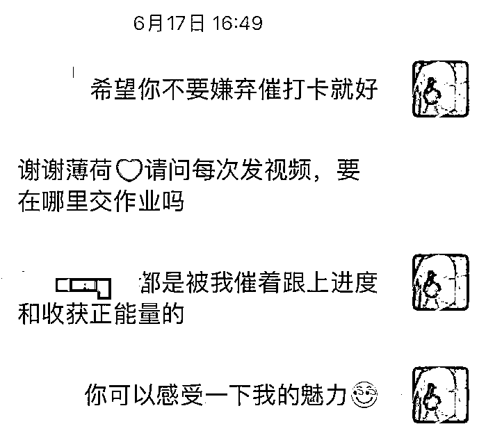
结果大部分船友在徘徊、在忙自己项目、在另外一只船忙着、在纠结要不要做、
在处理家事、在忙公司加班、做了实操不打卡、卡在限流、卡在没变现，
所以打卡的人员中，还留着个位数打卡的人员。
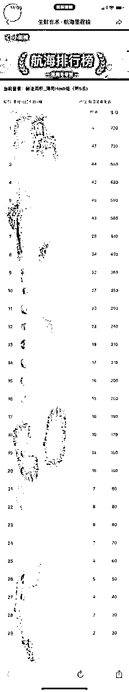
而自己对于这类事情完全不可控，感觉帮不了也不知怎么帮，也没向外求助领队教练或生财，
而是每日只把【催打卡】的动作做完就当做已经完成监督，
到最后，秉着【放下助人情节，尊重他人命运】的心态，心力交瘁又摆烂地只能服务几个坚持打卡的小伙伴。
改进
1.早期识别船友的状态和目标，对于犹豫和不坚定的船友进行劝退下船。
2.正视自己的助人能力，及时提升自己的能量摆正心态，主动寻求领队教练志愿者的的帮助。
最后附上李诚老师高手领航的思维导图
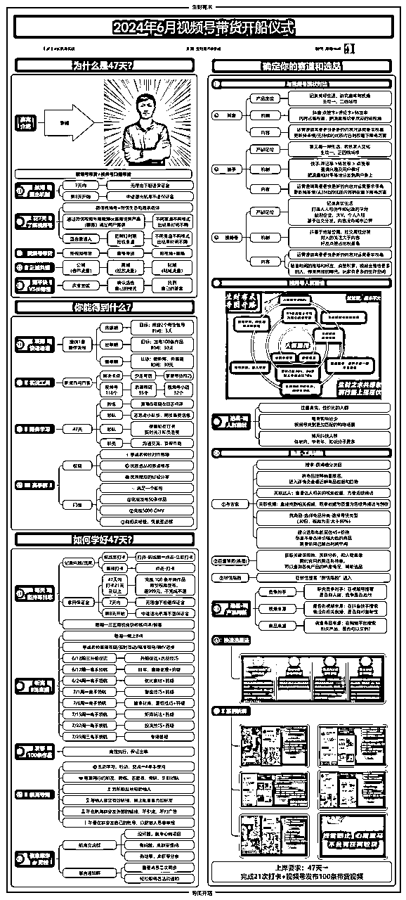
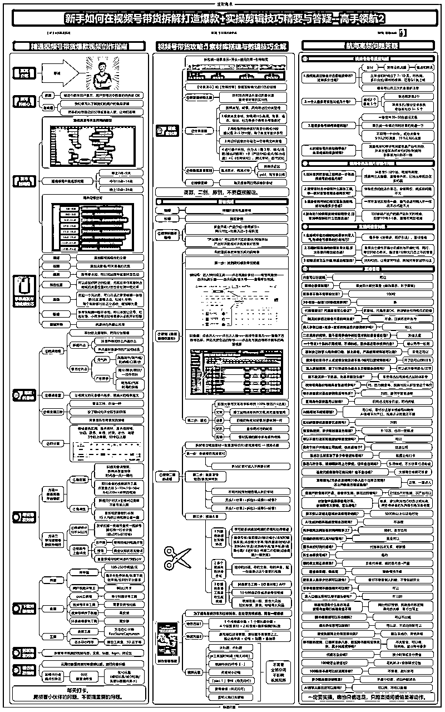
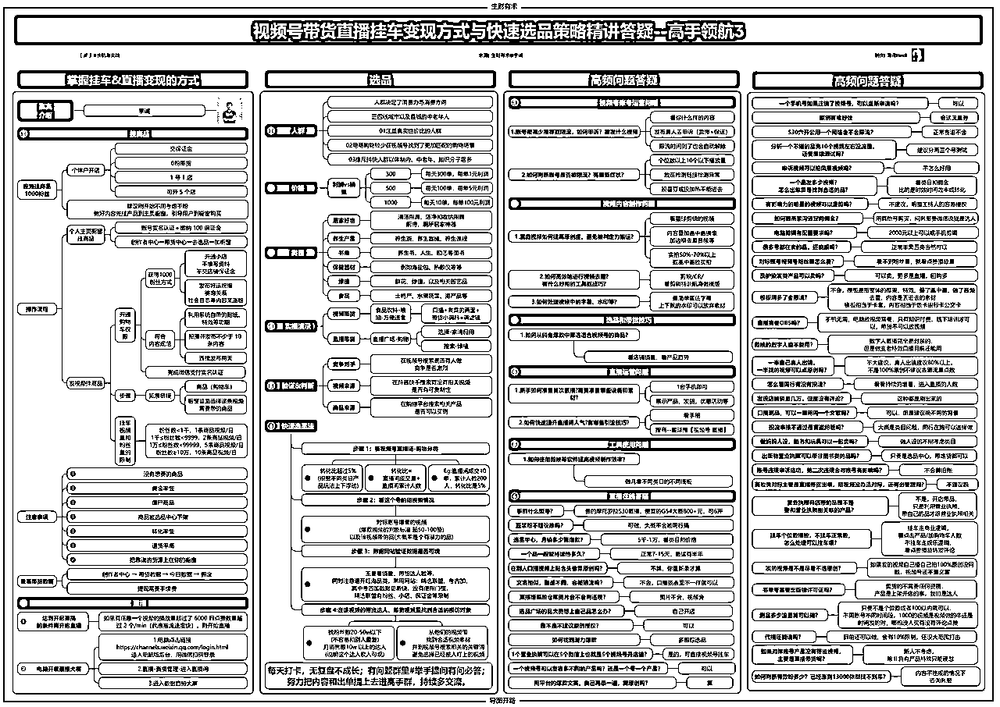
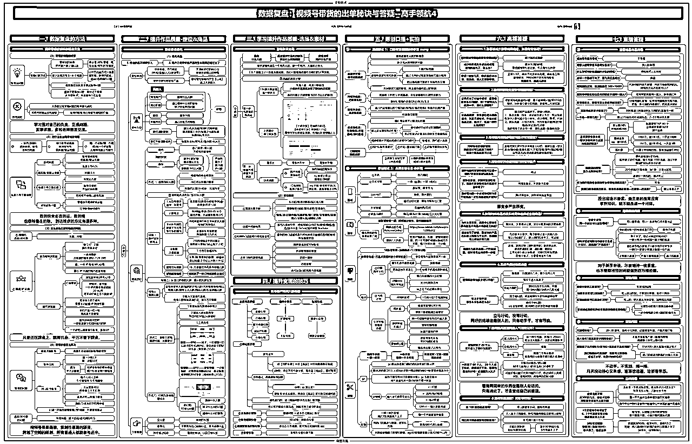
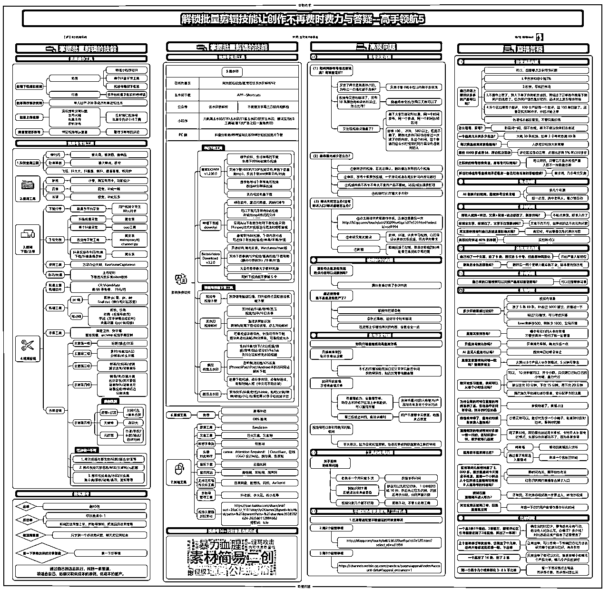
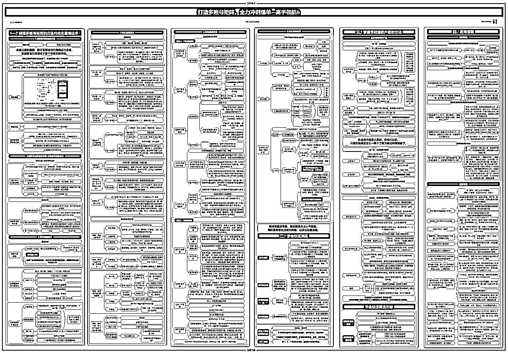
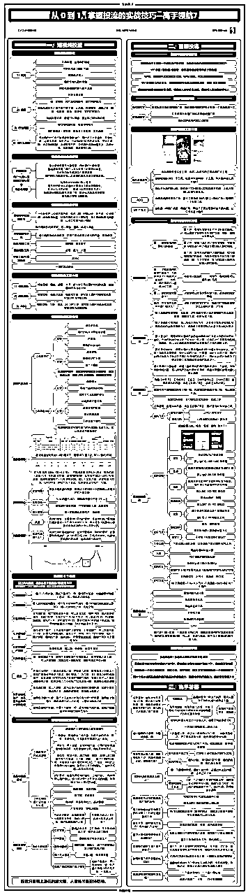
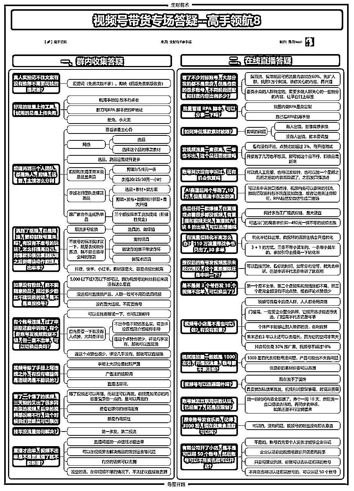
1、重新学习优秀志愿者的精华帖，提炼出适合自己航海前中后期的每个细节的内容，给自己制定相关的SOP，保持航行初心不偏离，并且指导服务利他。
2、及时提升自己的能量，不要把负能量带到志愿监督过程中。
3、服务船友过程，及时发现他们的闪光点，及时公开表扬，提取作业亮点放大船友名字群内公开夸奖，平等视角下欣赏，给予他们坚持下去的勇气。
4、学习优秀志愿者的真诚运营获得船友的信任，赋能船友精进。
5、志愿者每阶段的价值都要做好体现：破冰之初的知己知彼、启航之后激发船友热情、困厄期请外援为船友加热、后期一对一私教级分析带动修正。
6、专用文档记录整个航海过程船友的成绩和感恩体验，在毕业上岸那天以竖版导图的形式呈现给船员，而不是卑微讨好，而是让他们被看见。
7、好好利用其他志愿者和领队的经验，珍惜自己背后的强大生财后援团，遇到问题，宁可问错，不要沉默。
希望你们也能做一个合格的志愿者，呈现出“真诚、利他、主动、开放、空杯、日拱一卒”的样子，成为自己的榜样，船友的榜样，其他志愿者的榜样，继续精进向高阶领队进军，剑指生财孵化器。
最后感谢32位陪伴我的船友，领队和教练以及视频号带货的志愿者们，感谢生财给我一个机会做志愿者，虽然这是个失败的复盘，但是也是我的宝贵经验，期待以后还能继续做更优秀的志愿者。
最后接受大家就尽情地嘲笑批评，我全盘接受！